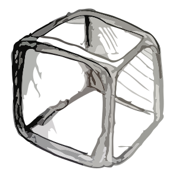

Discover NUtube
Introduction
Welcome to the University of Newcastle's YouTube channel showcase! It's well known that a new YouTube star is born every day, however if you want to be a star you're going to need advertising and recognition. NUtube aims to provide this essential service.
NUtube aims to allow channel owners to advertise their channels in an effective and well thought-out manner using detailed data collection - in fact, NUtube's stated goal is:
to help these stars to shine!
And best of all? This service is provided free of charge to all present and past UON students! Want to learn more about the University of Newcastle? Check out their Homepage!
What is a YouTube Channel?
When a new user joins YouTube, a personal channel is immediately created for that user, providing a place to show the entirety of their created content in one place. This allows a content creator to provide information about themselves and their videos, as well as create playlists for a more comprehensive viewing experience.
Want to see more?
Then check out UON's hand picked showcase of promising and already well-known YouTube sensations, with special emphasis on a few key categories as detailed below.
Categories
Music
From Indie Beats to Hardcore Metal, It's all here!Gaming
See reviews and lets-plays for your favourite games!Tech
The latest and greatest in Gadgets & Technology!- 
Animation
Something for all audiences! Comedy
Giggles to Gallows - variety central!